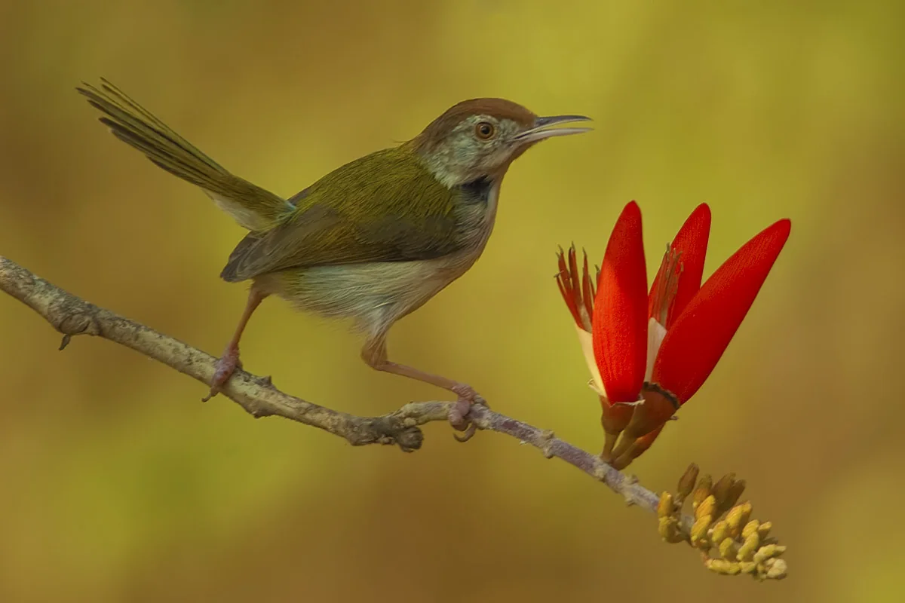

返回名录NO. 026 · 林鸟与城市常客 / 扇尾莺科 · Cisticolidae
长尾缝叶莺
Orthotomus sutorius会「缝纫」的迷你小鸟
体长只有十几厘米，却干得出针线活：它用植物纤维把两片大叶子缝在一起，做成一个悬在枝头的「布袋巢」。长尾缝叶莺的名字，就来自这门手艺。
图集 Plates & Photographs
一张科学绘图（博物画）用于对照形态与色块，两张野外摄影记录它在真实光线里的样子。点击任意一张可放大。
辨识特征 Identification
- 头部头顶至后颈栗红色，与橄榄绿的上体形成明显分界；眉纹浅淡。
- 体羽上体橄榄绿，喉部白色，胸腹偏灰白，两胁淡黄；整体小而紧凑。
- 喙与尾喙细长、略下弯，适合在叶隙间挑虫；尾较长，常高高翘起并上下摆动。
- 腿腿脚肉粉色，细弱，跳跃时显得轻巧。
习性 Behaviour
极活跃，总在灌丛中下层钻来钻去，很少停在开阔处暴露自己，因此「只闻其声、难见其形」是常态。以小型昆虫和蜘蛛为食。繁殖期用蛛丝、植物纤维穿过叶片边缘的穿孔，把叶片缝合卷成巢，内垫细草——这种「缝叶」行为在鸟类中相当罕见。
鸣声 Voice
野外鸣声录音
点击波形可跳转 · 建议佩戴耳机
0:00 / 0:55
录音 Ajit Ampalakkad · 许可 CC BY-SA 4.0
· 原始文件
叫声极其响亮、单调而执着：「te-chee—te-chee—te-chee」，一声高一声低，常连续重复几十遍，音量远超它的体型。是珠三角庭院里最容易被误认为「大鸟」的声音。
在珠海去哪里找 Where to Watch
- 野狸岛灌木丛
- 香山湖公园绿篱
- 小区花园
- 淇澳岛村边灌丛
观察提示
先听声锁定方向，再盯着 1–2 米高的密集灌木等它露头：注意翘起的尾和栗红色的头顶。它几乎不会飞到空旷处，别往天上找。